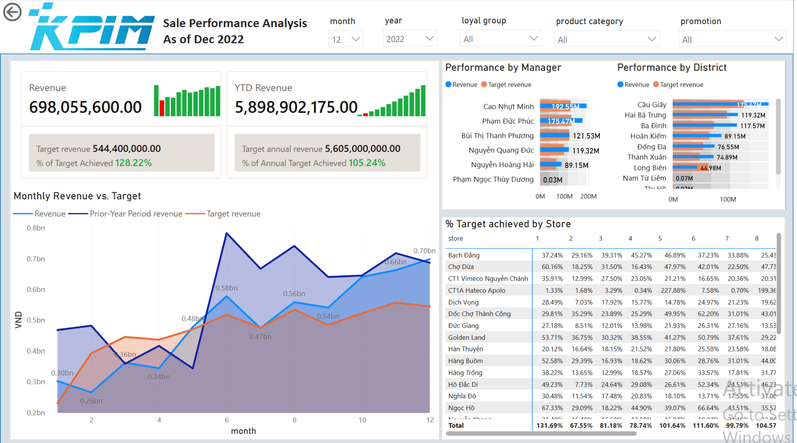
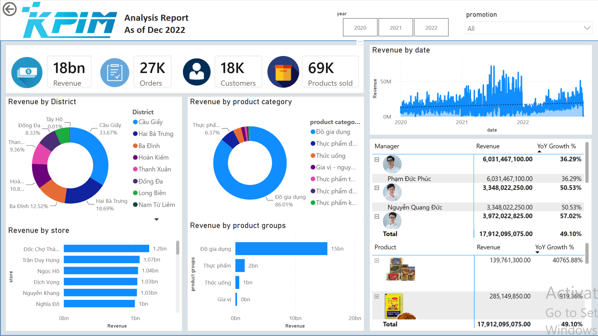

Power BI · Sales Analytics · Business Intelligence
An end-to-end retail analytics project using Power BI to track revenue, target attainment, sales trends, store and district performance, product mix, and manager results.
The Problem & Context
The project focused on turning detailed retail transaction data into a management view that could quickly answer where revenue was coming from, whether sales targets were being achieved, which districts and stores were outperforming, and how product mix and promotions affected performance.
My Role
I built the Power BI report from the analytical model through the final dashboard experience. I organized business KPIs, created time and category filters, designed performance views for managers, districts, stores, and products, and structured the report so users could move from executive-level KPIs to more detailed operating results.
Methodology
Structure revenue, orders, customers, products sold, target revenue, target-achievement percentage, and year-over-year growth into decision-ready measures.
Break results down by month, manager, district, store, product category, product group, loyalty group, and promotion to identify the strongest and weakest contributors.
Combine KPI cards, trend charts, ranked comparisons, matrices, and slicers so users can explore performance at both executive and operating levels.
Dashboard Evidence


Key Findings
The sales-performance view reports December revenue of approximately VND 698.1M against a VND 544.4M target, equal to 128.22% of target. Year-to-date revenue reached approximately VND 5.90B, or 105.24% of the annual target.
The district mix chart shows Cầu Giấy contributing 33.67% of revenue, ahead of Hai Bà Trưng at 18.69% and Ba Đình at 12.52%, making district concentration an important factor in overall sales performance.
The product-category view shows household goods contributing 86.01% of revenue, indicating that overall performance was highly concentrated in one major category and should be interpreted alongside product-level and promotion analysis.
Business Value
The report gives managers one place to compare actual results with targets, identify high- and low-performing locations, understand product concentration, and drill into manager or product-level growth. The interactive filters also make the same dashboard useful for both periodic performance reviews and targeted follow-up analysis.
Outcome / Achievement
Created a multi-page Power BI sales analytics report covering executive KPIs, revenue trends, target attainment, manager and district performance, store-level results, product mix, and year-over-year growth — turning transaction-level retail data into a portfolio-ready business intelligence project.
Interactive Dashboard
Use the embedded report to filter the analysis by month, year, loyalty group, product category, and promotion and inspect the underlying performance views interactively.